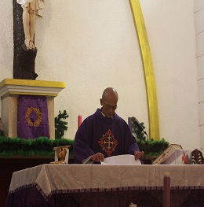
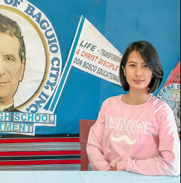
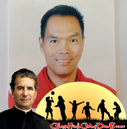
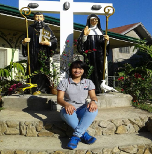

School DirectorRev. Fr. Benedict P. Villapa |
School PricipalMrs. Sandra B. Pulkero |
|---|
|  Jinky Mae Dumapis |
Henry Esquejo |
Rendylfred Pasadillo |
|---|
Jay Cee Cruz |
Digna Saturnino |
JShen Lacsamana |
|---|
Sherlyn Joy Calahi |
 Rey Fabian |
 Sisa Canuto |
|---|
Academic Standards